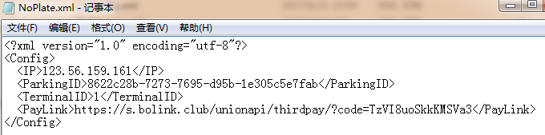
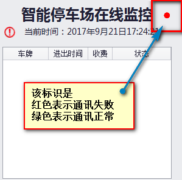
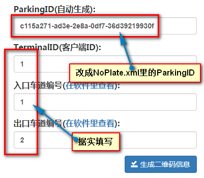

无牌车扫码通行功能
以下参数设置只对当前电脑有效,多台电脑需多次如法炮制.
无牌车或不能识别的车牌,通过微信或支付宝扫描张贴的二维码可以像正常识别到车牌一样进出场.
进场时,车主主动扫描入口处的二维码,系统会分配一个临时车牌给该车主,之后处理流程同正常识别到车牌一样.
出场时,车主再主动扫描出口处的二维码,系统自动检索出为该车主分配的临时车牌,之后处理流程同正常识别到车牌一样.
本功能支持移动支付,可应用于无人执守的停车场.
联系我司获取配置文件:NoPlate.xml,将该文件拷贝到软件根目录的Config文件夹里,重启软件.
软件会检测该文件,若存在,则自动打开无牌车扫码通行功能.
下面简单说一下该配置文件里的参数.
用记事本打开该文件,如下图.

IP:运行"无牌车扫码通行"程序的服务器IP地址,不要修改这个参数.
ParkingID:区分停车场的唯一ID号,不能相同.该参数由我司提供,不要手动修改.
TerminalID:多电脑管理的停车场,本ID用于区分不同电脑,同一停车场内ID不能相同.
如某停车场有A,B两台电脑管理两进两出,那A电脑TerminalID若是1,B电脑则不能是1,可以是2.
PayLink:实现移动支付的跳转链接,不要修改这个参数.
更改后,需要重启车牌识别管理软件.
如上设置后,停车场管理软件进入"实时监控"即开始使用本功能.
注:a.管理电脑必须能够访问internet网络;
b.软件必须进入实时监控,本功能才会生效.
在实时监控右上角可查看本地电脑是否能与服务器通讯.

指示标识若是红色,本功能将不能使用,请检查本地网络或配置参数.
点击配置二维码信息,如下图操作:

将生成的二维码打印出来,张贴到对应的停车场道口,千万不能贴错.
车辆进场时,车主用微信或支付宝扫描入口处的二维码,手机界面弹出下图
a.软件必须进实时监控; b.使用的二维码必须是对应ParkingID生成,否则会造成使用混乱; c.收费电脑必须网络正常,且能够访问外网. d.要增加移动支付的,必须还通我司支付功能,否则只支持现金支付.